Chapitre I
L'enfance, à deux.
Sur cette photo, on n'a presque pas grandi. Toi la première, moi juste derrière — comme toujours.
Aussi loin que je me souvienne, tu étais déjà celle qui veillait sur moi.
27 histoires n'auraient pas suffi. Alors j'en ai choisi quelques-unes, en musique.
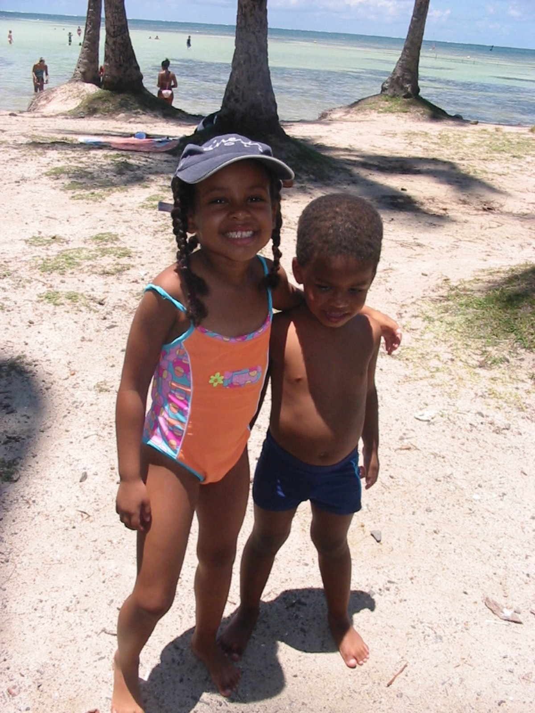
Sur cette photo, on n'a presque pas grandi. Toi la première, moi juste derrière — comme toujours.
Aussi loin que je me souvienne, tu étais déjà celle qui veillait sur moi.
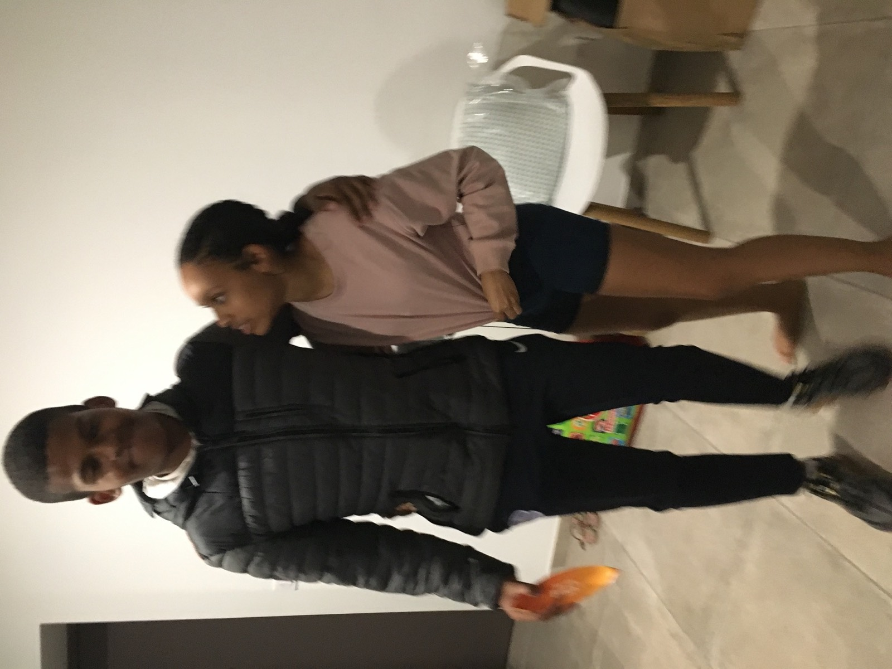
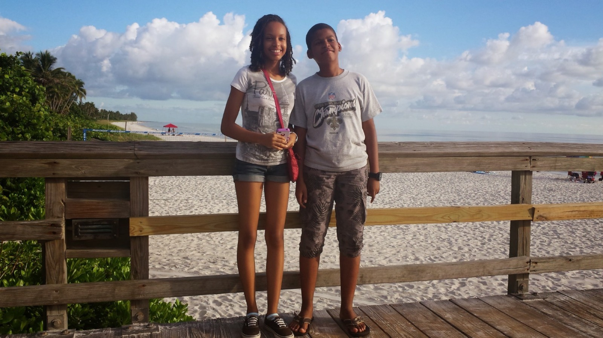
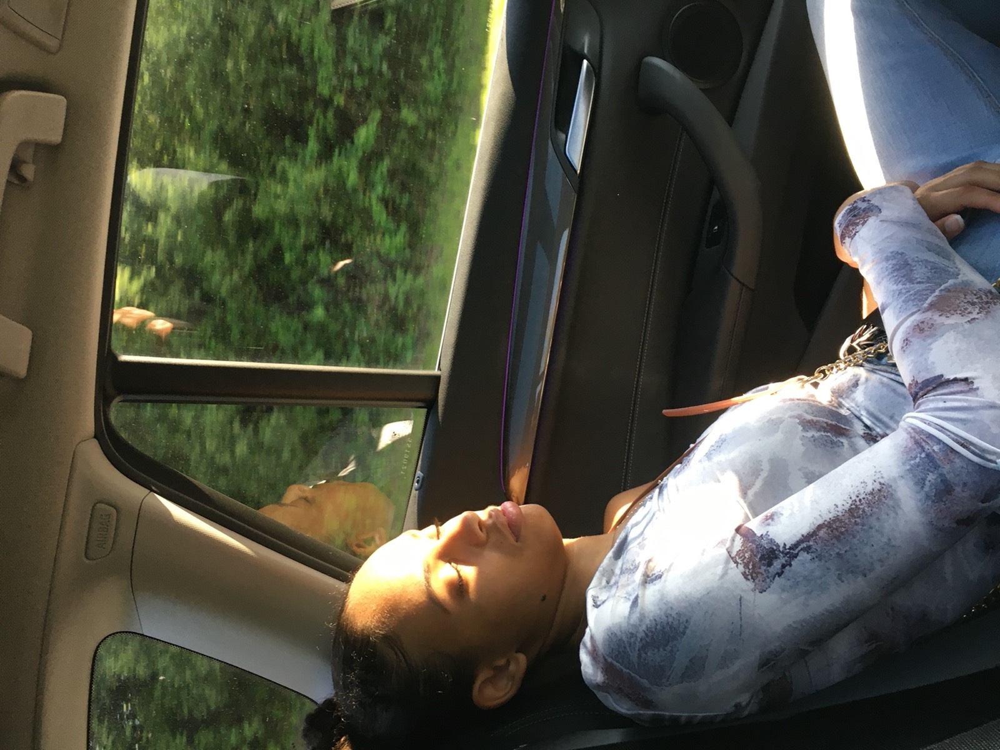
Les vacances, les fous rires débiles, les journées entières côte à côte sans se poser de questions.
Tu me gardais toujours près de toi, comme si t'occuper de moi ne t'avait jamais pesé.
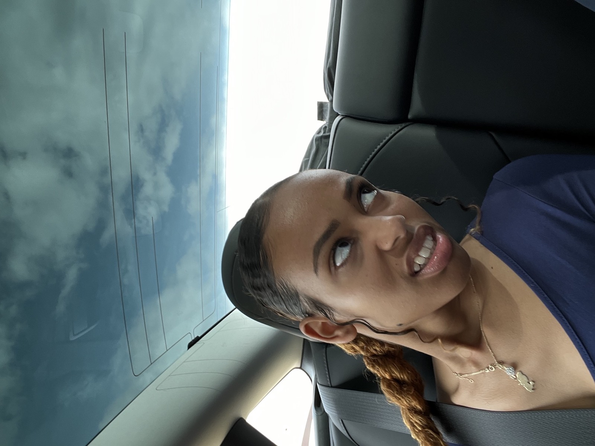
Tu as toujours été la première à répondre, à arriver, à réparer ce qui n'allait pas.
Je n'ai jamais eu besoin de demander bien longtemps — tu étais déjà là.
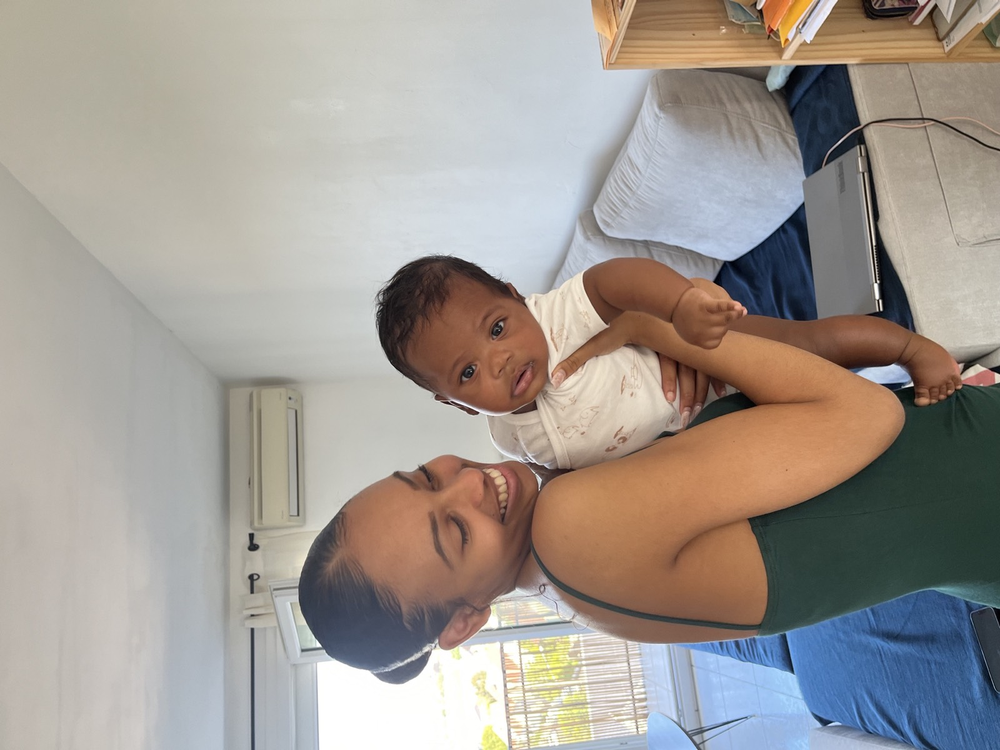
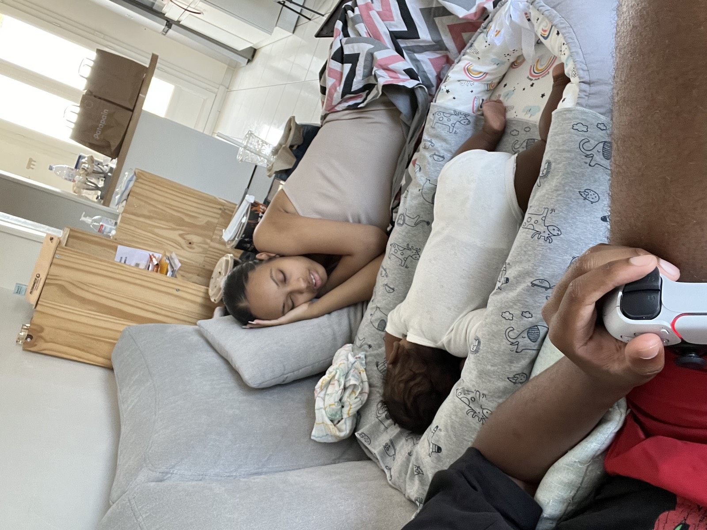
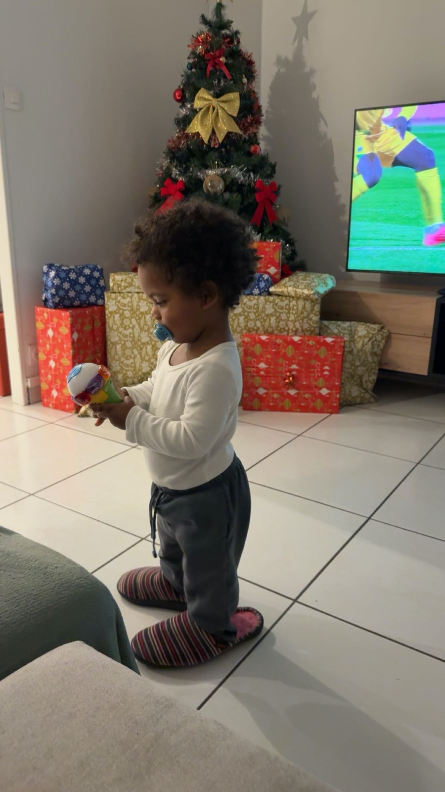
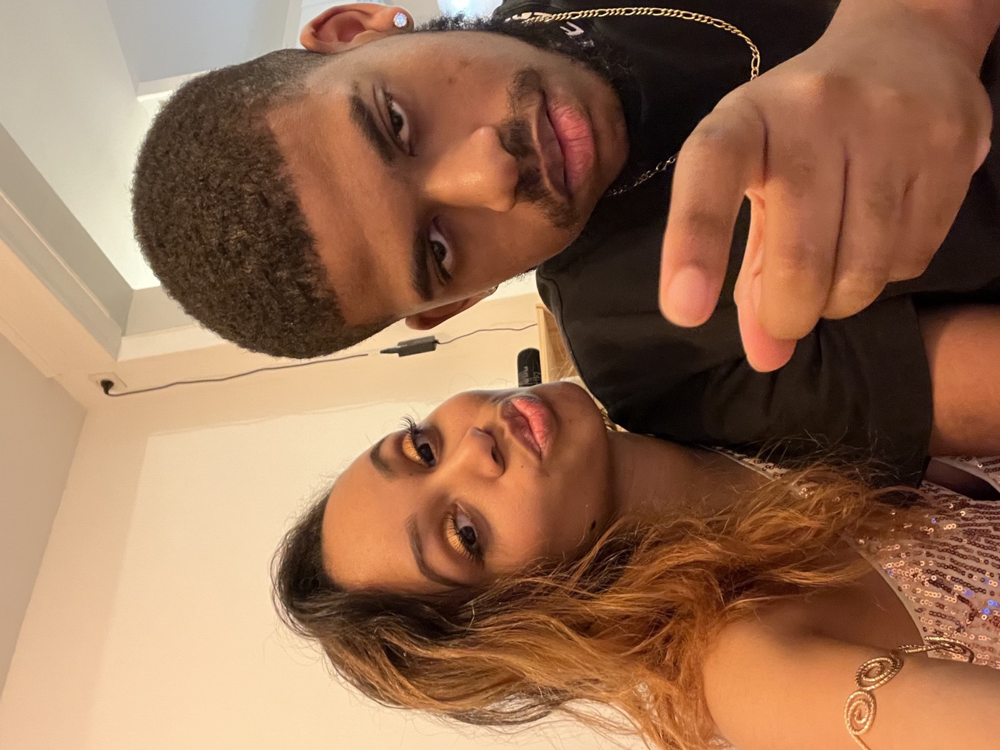
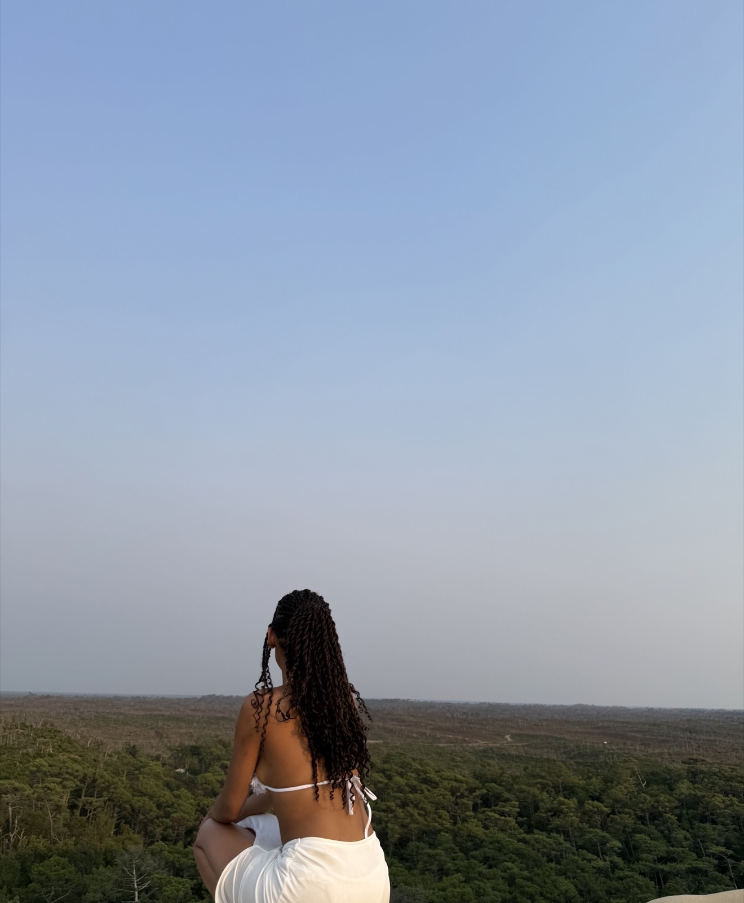
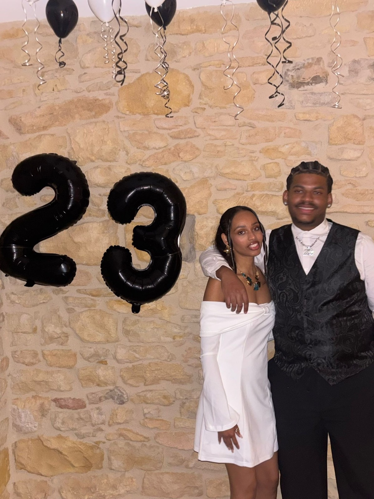
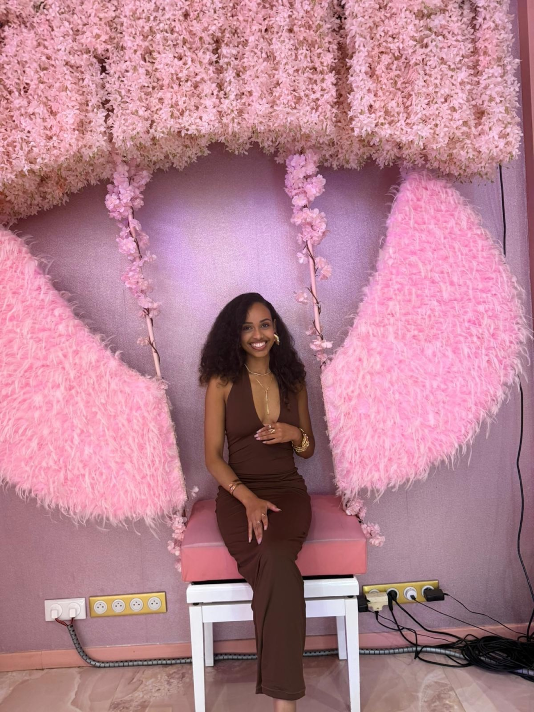
Je te regarde vivre ta vie : voyager, rayonner, et être une mère formidable.
Prendre soin des autres, tu l'as toujours fait — avec moi, petite déjà. La personne qui a passé sa vie à prendre soin de tout le monde mérite, elle aussi, qu'on prenne soin d'elle.
Alors aujourd'hui, jour de tes 27 ans, j'avais juste envie de te le dire autrement que par un message WhatsApp : merci d'avoir toujours été là. Merci d'avoir été une grande sœur, une confidente, et parfois une seconde maman, sans jamais rien demander en retour.
Joyeuse anniversaire, Marie. Je t'aime.